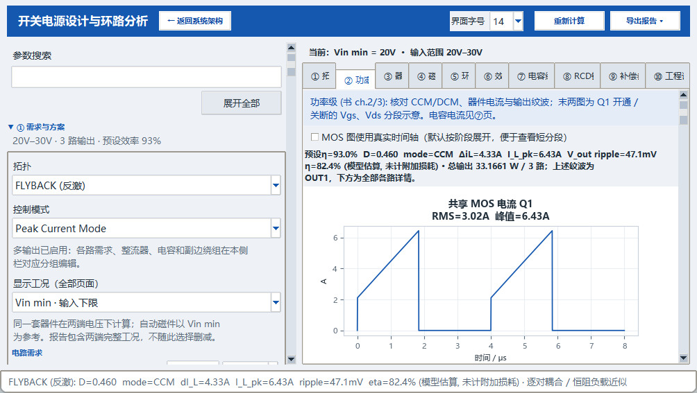
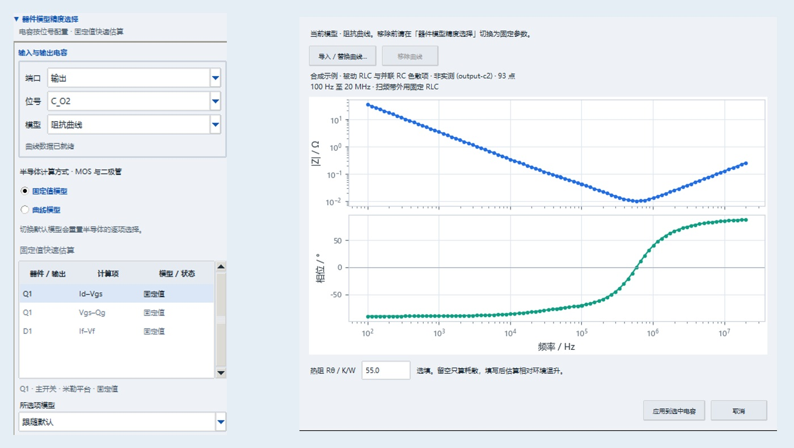
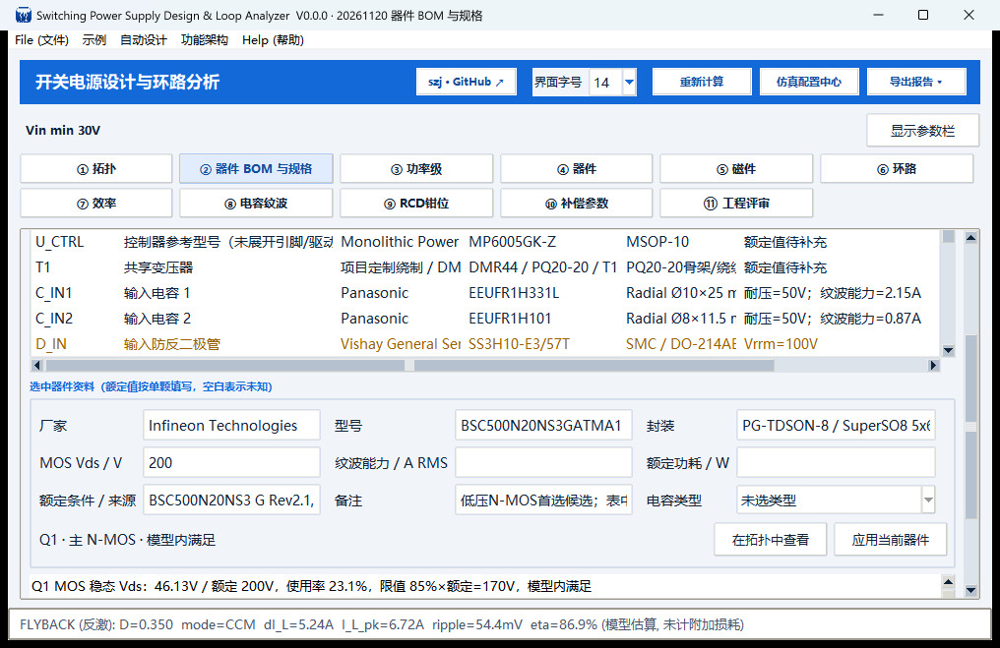

06 配置功率级 器件与电容
电感和变比决定功率级工作点。器件曲线、驱动与各颗电容的参数影响损耗、应力和纹波。先从拓扑图核对位号，再给同一硬件配完整的输入。
开关电源单元 → 左侧“② 功率级与钳位”“③ MOS 与整流器件”“④ 输入/输出电容与防反”“⑤ 栅极驱动”。
操作步骤
- 确认储能与变比 反激的 L 填原边励磁电感，正激分别填励磁电感和各路滤波电感。检查隔离原、副边整数匝数与变比一致。为反激在“RCD 漏感钳位”填写实际采用的参数。
- 沿拓扑核对反馈路径 在“① 拓扑”点“完整回路”。从上方功率级的输出取样点，沿实线跟踪右侧反馈网络、左侧芯片的 COMP 或 FB 引脚，以及 GATE 返回 MOS 栅极的路径。点“反馈与芯片”聚焦这两部分，点“放大查看”在独立窗口读图。反馈补偿与“⑩ 补偿参数”共用电路。
- 选择器件模型 在“器件模型精度选择”按位号选择固定参数或曲线模型。半导体可逐项覆盖全局模式。在“MOS 与整流器件”按位号导入或预览曲线，核对轴向和倍率。
- 输入电容组和防反 在输入端和各启用输出的电容组中调整数量，逐颗录入有效容量、ESR、ESL。阻抗曲线和热阻也在对应电容组录入。启用防反管的端口另填对应压降。
- 核对实际器件额定值 打开“② 器件 BOM 与规格”，按位号填写厂家、型号、封装和适用额定值，再点“应用当前器件”。点击“在拓扑中查看”可定位位号。更换器件时同步更新电气参数和曲线。
- 检查两端工况 点“重新计算”，在“③ 功率级”确认模式、占空比和波形。在“④ 器件”“⑧ 电容纹波”和“⑦ 效率”核对器件峰值、各颗电容分流及损耗来源。切换到另一输入端点重复核对。

先读顶部工况，再看横轴时间、纵轴单位、开关导通区间和标注的 RMS 或峰值。

左侧选择器件模型。右侧是在输出电容组中打开的阻抗曲线与热阻窗口。

图中已收起左侧参数栏。选中 Q1 后，向下滚动可填写单颗器件资料、查看降额结果，或跳到拓扑图。
输入字段
| 字段或选项 | 单位或取值 | 输入的含义及用途 |
|---|---|---|
| 储能电感 L、正激变压器励磁电感 Lm、原副边匝比 Np/Ns | H、H、无量纲 | 区分功率传递电感与变压器励磁电感。隔离的每条副边以实际整数匝数核对。 |
| 旧版漏感系数 K、钳位比 Kc、钳位电压波动比例 dC | 无量纲 | K 是旧版漏感输入。Kc 定义相对反射电压的钳位比，dC 约束钳位支路波动。物理周期矩阵适用时按其换流模型计算。 |
| Rds(on)、Coss、Vgs(th)、MOS 内部栅阻 | Ω、F、V、Ω | 分别用于导通损耗、开关输出电容近似、阈值和栅极换流时间计算。取所用工作条件的器件数据。 |
| MOS 转移曲线、栅电荷曲线 | X=Vgs / Y=Id，X=Qg / Y=Vgs | 按指定方向绑定 Q1。若旧文件的原始 X 数值以 nC 计，选 10⁻⁹（n）。已经乘过数量级的 V1.3 提取文件选择倍率 1。 |
| 米勒平台、Qg、Qg(th)、Qgs、Qgd | V、nC 或界面倍率 | 固定值计算时输入平台电压、总栅电荷、门限电荷、平台前电荷和平台段电荷。四工况页面可核对不同输入端点的开通和关断值。 |
| 二极管 Vf、Qrr、正向曲线 | V、C、X=Vf / Y=If | 固定 Vf 参与标称工作点或换流近似。按位号导入的正向曲线用于导通损耗，Qrr 另用于反恢复近似。 |
| 驱动电压、驱动器内部电阻、开通 / 关断外阻 | V、Ω | 供开关分段时间和损耗模型使用。开通、关断外部栅阻分别设置。 |
| C、ESR、ESL | µF、mΩ、nH | 有效电容、串联电阻、串联电感。并联组保留逐颗参数，分流结果需按同一颗的额定纹波电流复核。 |
| 钳位 C/ESR、Q2 参数、Dmax、死区 | F/Ω、按相应单位、%、s | 有源钳位正激专用。分别约束钳位电容、辅助 MOS 损耗、驱动时序和允许占空比。 |
结果核对
利用器件页或 BOM 表将 MOS 阻断平台、尖峰及整流管反压分别与额定值和降额值比较。器件损耗与效率用同一工况。
器件曲线显示“待导入”时需补绑定或明确切到固定值。出现“需校核”时查看整理、端点外推等说明。
电容纹波出现超限时同时看电容组与单颗支路。开关振铃受安装寄生和测量带宽影响，计算与实测应采用相同的观察点。